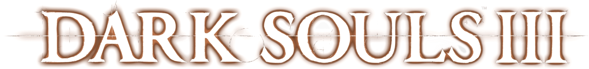

Solaire of Astora
Solaire of Astora is a Warrior of Sunlight who appears throughout the world. He is a jolly and strong knight. He even claims of choosing to become undead so that he could search for his own sun.
Knight Artorias, The Abysswalker
Knight Artorias was one of the four Knights of Gwyn, the commanding knights of Lord Gwyn's army. Artorias had an unbendablewill of steel, which both helped and fed his hatred for servants of the Dark, particularly the Darkwraiths of Kaathe.
Black Dragon Kalameet
Black Dragon Kalameet is the last of the ancient dragons and bringer of calamity. Even Anor Londo feared to provoke hiswrath.
Andre of Astora
A blacksmith residing in the old church building in Undead Parish. Specialized in physical path and Magic weapon enchantments using Faith
Sunlight Straight Sword
This standard longsword, belonging to Solaire of Astora, is of high quality, is well-forged, and has been kept in good repair. Easy to use and dependable, but unlikely to live up to its grandiose name.
Greatsword of Artorias
Sword born from the soul of the great grey wolf Sif, guardian of the grave of the Abysswalker Knight Artorias. Sir Artorias hunted the Darkwraiths, and his sword strikes harder against dark servants.
Demon Great Machete
The lesser Capra demons use these greatswords in pairs. The blade is cast iron and hooked. The sword is imbued with no particular magic, but for those who have the strength, its great weight will smash foes mercilessly.
Uchigatana
Katana forged in an Eastern land. Known for its brisk slashing motions. The Uchigatana cuts beautifully and causes bleeding, but its blade is easily nicked.
Gravelord Sword
Sword wielded only by servants of Gravelord Nito, the first of the dead. Crafted from the bones of the fallen. The miasma of death exudes from the sword, a veritable toxin to any living being.
Black Knight Greataxe
Greataxe of the Black Knights who wander Lordran. Used to face Chaos demons. The large motion that puts the weight of the body into the attack reflects the great size of their adversaries long ago.
Demon's Great Hammer
Demon weapon built from the stone archtrees. Used by lesser demons at North Undead Asylum. This hammer is imbued with no special power, but will merrily beat foes to a pulp, provided you have the strength to wield it.
Dragonslayer Spear
Cross spear born from the soul of Ornstein, a Dragonslayer guarding Anor Londo cathedral. Inflicts lightning damage; effective against dragons. Two-handed thrust relies on cross and buries deep within a dragon's hide, and sends human foes flying.
Lifehunt Scythe
Scythe born from the soul of Priscilla, the stark white crossbreed trapped inside the painted world of Ariamis. Even the Gods feared Priscilla's lifehunt ability, and in the hands of a mortal, its power will turn upon its wielder.
Lucatiel of Mirrah
A feared warrior from Mirrah. She has come to Drangleic in search of her brother and a cure for the Undead curse but soon begins to hollow…
Ancient Dragon
This powerful being stands and waits, for whoever may visit him.
Looking Glass Knight
Those who wish to serve the king as loyal warriors must take the King's Passage and face the Looking Glass Knight. Those who fail the test are sacrificed by the merciless specular monstrosity.
Vendrick
The King was wasted away, a shadow of his former self, but still held something dear.
DarkLurker
The Dark Chasm of Old is the remnant of some ancient, dissipated being.
Fume Knight
The rebel Raime, after his defeat at the hands of Velstadt, came to Brume Tower in search of greater strength. When he found it, it came not from a regal father figure like before, but from a newfound mother who gave him true purpose.
Velstadt, the Royal Aegis
Velstadt was always at the King's side, as if he were his lord's own shadow. After the King retired to the Undead Crypt, Velstadt followed, never to return.
Sir Alonne
Sir Alonne came to this land from the east, chose to serve a little -known and unestablished lord, and helped him become the Old Iron King. Then, at the very peak of his sire's rule, Sir Alonne set out again, in search of land yet unknown.
Blue Flame
Straight sword wielded by Leydia apostles. Imbued with a special magic that makes the Blue Flame both a sword and magic catalyst. Execute a strong attack to emit magic. The Leydia apostles, adept at magic, wielded unique weapons but were hunted down as traitors.
Loyce Greatsword
Greatsword of the Knights of Loyce. The Knights of Loyce were commanded to strike down each malformed terror that arose from chaos, and they would not hesitate even it if were their own king.
Pursuer's Ultra Greatsword
Ultra Greatsword of the Pursuer. Known as the mightiest of the straight swords, it demands great strength and dexterity of its wielder. The Pursuer hunts down those branded by the curse, as if each Undead soul that he claims will atone one of his sins.
Arced Sword
A curved greatsword forged from the soul of the Flexile Sentry. There is something unsettling, and at the same time beautiful, about its long curved blade. The sentry crammed inmates of the overflowing Bastille onto a rickety ship, and cast them out to the open sea. The majority of them drowned or starved but a few hardy survivors made land to the south, and imparted their knowledge of sorcery to the people there.
Darkdrift
Katana of Grave Warden Agdayne. Has a crystal-clear blade and a strong attack that slices through enemy shields. This katana was originally wielded by the one who gave us first death, and still exists imperfectly between planes.
Espada Ropera
Thrusting sword of Chancellor Wellager. Forged with rare geisteel. A masterpiece of the great blacksmith Llewellyn that he brought along as a gift when he left Mirrah for Drangleic.
Gyrm Greataxe
A greataxe used by the nomadic Gyrm. At first glance this greataxe appears crude, but with further examination one sees the fine craftsmanship of Gyrm blacksmiths. Quite heavy for a human, but swung about with reckless abandon by the Gyrm.
Drakekeeper's Great Hammer
An extremely sturdy pitch-black great hammer. Colossal warriors staunchly watch over the shrine, ready to defend its resident, or allow one worthy enough to be granted audience.
Bone Fist
Bone that is bound to the fist. Used to enhance hand-to-hand combat. Salvaged from a malformed creature. Enables one to fight with inhuman strength, as if the very spirit of the bone's malicious owner had taken control.
Santier's Spear
A spear that was embedded in a stone statue. According to an old local legend, a great spear was used to defeat Santier, the walking statue. Perhaps this is that very spear. But it will be difficult to utilize such a thing in the manner of a spear. Your only choice is to swing it around, and smite foes about the head.
Scythe of The Forlorn
Scythe of the Forlorn, who wander the land of the Undead. The King's elder brother Aldia sought to overcome the curse through means unalike his sibling's. The Forlorn were born of Aldia's sinful infatuation.
Red Iron Twinblade
A twinblade with heavy blades on each end. More suited to smashing foes than slashing them. Requires a great deal of muscle to wield artfully. The twinblade closely imitates the design of a foreign-made weapon that has the blades affixed to both ends of its hilt.
Twin-Headed Greatbow
A greatbow made of animal bone. The fine craftmanship suggests that it originates in Lanafir. The unusual design appears to have ceremonial implications, but may simply be intended to intimidate foes.
Sunset Staff
A staff said to have been forged in Aldia. A catalyst for sorceries and hexes. Particularly powerful for casting hexes. The mysterious Lord Aldia secluded himself inside a manor to conduct various experiments. Those invited to the manor disappeared, replaced over time with malformed beasts that roamed its halls.
Dragon Chime
A sacred chime shaped as a dragon. A catalyst for miracles and hexes. This chime sat long in the Dark Chasm, but still one senses a sublime purity. Only those with the deepest faith can wield this chime, but they will be rewarded with greatly amplified spells.
Siegward of Catarina
"To your valour, my sword, and our victory together. Long may the Sun shine."
Abyss Watchers
It is unknown whether one or all of the Abyss Watchers linked the fire. Perhaps they worked as a team to push back the darkness.
Pontiff Sulyvahn
Pontiff Sulyvahn of Irithyll imprisoned a god of the old royalty in the abandoned cathedral, to be fed to the devourer.
Dragonslayer Armour
The Dragonslayer Armour, controlled by the Pilgrim Butterfly, lost its master long ago, but still remembers their sporting hunts.
Soul of Cinder
The Soul of Cinder is the manifestation of all Lords of Cinder that have pledged to defend the First Flame by linking it.
Slave Knight Gael
"The painting of Ariandel. Well, rotten scrap of it, that is. Go on, take it, touch it..."
Darkeater Midir
Midir, descendant of Archdragons, was raised by the gods, and owing to his immortality was given a duty to eternally battle the dark, a duty that he would never forget, even after the gods perished.
Ringed Knight Straight Sword
Straight sword wielded by the Ringed Knights. The arms of early men were forged in the Abyss, and betray a smidgen of life. For this reason the gods cast a seal of fire upon these swords, and those who possessed them.
Moonlight Greatsword
Legendary dragon weapon associated with Seath the paledrake. Oceiros, the Consumed King, was infatuated with the search for moonlight, but in the end, it never revealed itself to him.
Profaned Greatsword
ceremonial sword, held in Pontiff Sulyvahn's right hand, representing the Profaned Flame. Long ago, when Sulyvahn was yet a young sorcerer, he discovered the Profaned Capital and an unfading flame below a distant tundra of Irithyll, and a burning ambition took root within him.
Dancer's Enchanted Swords
Paired enchanted swords that Pontiff Sulyvahn bestowed upon the Dancer of the Boreal Valley. These blades, symbollic of the Dancer's vows, are enchanted with dark magic in the right hand, and fire in the left, mirroring the Pontiff.
Harald Curved Greatsword
Giant gold-decorated curved sword wielded by warriors of the Harald Legion, who sought the dark soul. The swords sank into the dark with the legion, where their blades were severely corroded
Frayed Blade
A dragon weapon symbolizing Darkeater Midir. The once-exquisite blade is now stained black, and frayed at the hilt. Without its sheath, it will soon crumble into nothing.
Dragonslayer's Axe
Axe favored by Creighton the Wanderer, infamous deserter of the Knights of Mirrah. Called Dragonslayer's Axe for the lightning that pulsates within its blade, but Creighton used it to slay men.
Dragonslayer Greataxe
Melted iron greataxe that once formed part of the Dragonslayer Armour. Thickly imbued with the power of lightning. Use skill to draw upon the techniques used to slay the archdragons.
Vordt's Great Hammer
Great Hammer wielded by Vordt, the outrider knight of the Boreal Valley. Weapon is inbued with frost, and causes frostbite. Frost accumulates in the body causing frostbite, which saps one's health, lowers absorption, and slows stamina recovery.
Demon's Fist
A demonic fist that burns with fiery essence. Its wielder can release this power through use of its Skill. When two-handed, fists are equipped in each hand.
Lothric War Banner
Gundyr's Halberd
Halberd of Gundyr the Champion, received when he was charged with his duty. This old cast-iron halberd has the power to break poise, and is said to never crumble, seeming to suggest that Gundyr was fated to eternal service from the beginning.
Friede's Great Scythe
A great scythe wielded by Sister Elfriede, with a curved blade thinly coated by Painted World frost that easily breaks the guard of shields. In the painting, the scythe is a symbol of a long-lost home, possibly explaining Elfriede's preference for it.
Repeating Crossbow
This crossbow, customized for repeat-firing to face mobs alone, was wielded by Slave Knight Gael. Used in the battles of an endless journey, this crossbow is covered with twists and dinks, rusted with blood, and made extremely brittle from overuse.
Court Sorcerer's Staff
Catalyst used by the court sorcerers of the Profaned Capital. Very powerful when wielded by an exceptionally intelligent sorcerer.The court sorcerers laid claim to the legacy of the renowned Big Hat Logan, going so far as to emulate him with copies of the staff he used.
Yorshka's Chime
A sacred chime belonging to Yorshka. Her brother, the former knight captain, presented her with this medium together with another gift: her name. The ringing of the chime must have done much to soothe her loneliness.